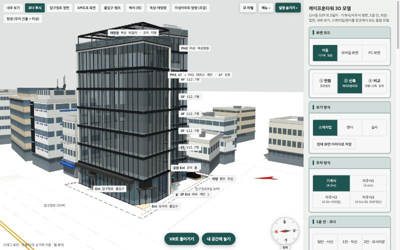
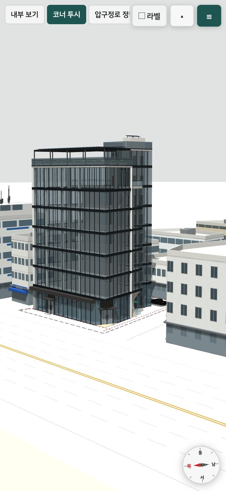
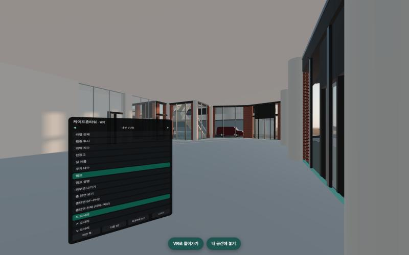
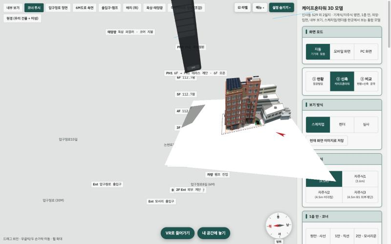
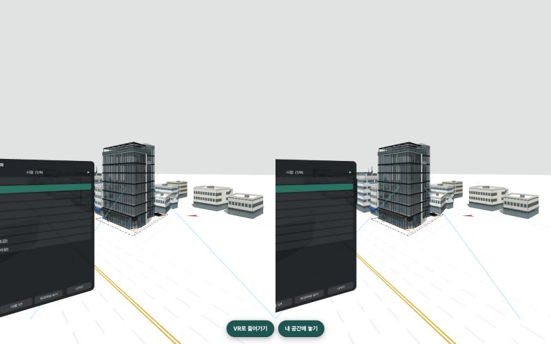
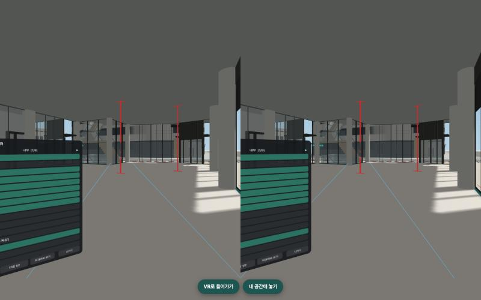
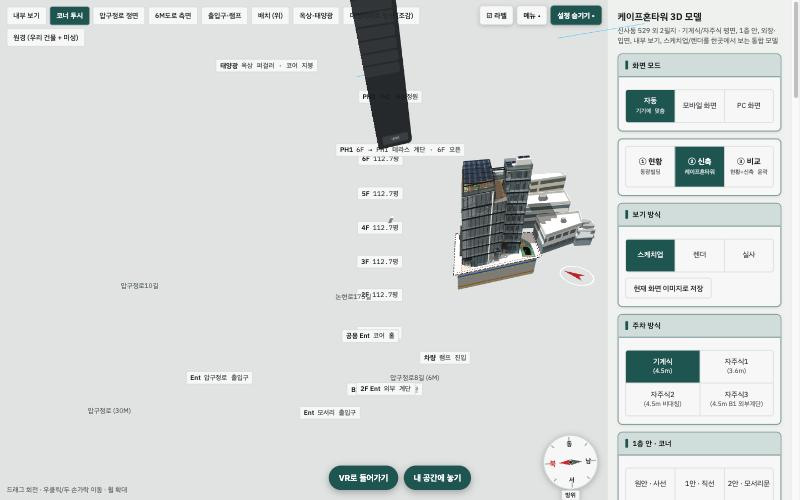

케이프혼타워 XR 계획서
0. 이 문서 쓰는 법
이 문서는 케이프혼타워 WebXR 작업의 기준 문서입니다. 사람과 AI 에이전트 모두 작업을 시작하기 전에 이 문서를 처음부터 읽고, 작업을 마치면 8장의 상태 표시와 14장의 진행 기록을 고칩니다. 이 문서와 코드가 다르면 코드를 직접 확인하고, 차이를 진행 기록에 남긴 뒤 문서를 고칩니다.
<li data-done>로 바꾸고, 에뮬레이터로는 끝났지만 퀘스트 착용 확인이 남은 항목은 <li data-dev>(실기기 확인 대기)로 둡니다. 진행하며 바뀐 계획은 항목 안에 "계획 변경"으로 적었습니다.1. 요약
Wing이 계속 발전시키고 있는 케이프혼타워 3D 웹뷰(new/3d-model.html)에 WebXR을 통합합니다. 같은 주소를 PC와 모바일에서 열면 지금과 똑같고, 메타 퀘스트 3에서 열면 실제 크기 몰입 VR과 패스스루 피규어 버튼이 더해집니다. VR 안에서도 Wing 화면의 기능(외관, 인테리어, 조명, 시간대 조합 선택 등)을 모두 쓸 수 있습니다. 지니가 새로 만드는 모델은 Wing 뷰어에 올라가고 XR은 자동으로 이어받습니다.
원칙 1. 최소 접점 수정
Wing 파일 수정은 허용되었습니다(2026-10-30 Jack). 다만 병합을 쉽게 하려고 Wing 파일에는 [XR] 표시를 단 짧은 연결 코드만 넣고, XR 기능 본체는 모두 xr/ 폴더에 둡니다.
원칙 2. Wing 기능 자동 반영
XR은 Wing이 열어 준 연결 통로(window.KHXR)로 내부 함수를 직접 쓰고, XR 메뉴는 Wing 화면의 버튼을 읽어 만듭니다. Wing이 기능을 추가하면 XR 메뉴에도 나타납니다.
원칙 3. 같은 주소, 기기별 모드
별도 VR 페이지 없이 3d-model.html 하나가 PC, 모바일, 퀘스트, 비전 프로를 모두 처리합니다. Wing의 VR 체험판 기능은 여기로 흡수합니다.
현재 위치 (2026-10-30)
P1에서 P6, P8 완료 P7 후순위 P9 대기
퀘스트에서 바로 써 볼 수 있는 미리보기: evyfjae.github.io/kapehorn-preview/feature-webxr/new/3d-model.html. 자동 시험은 기능 26/26, 호환 6/6 통과입니다. 10-30 첫 착용 확인에서 나온 메뉴 레이 문제와 밖으로 나가기 위치를 고쳤습니다(1030.p2). 실기기 측정이 필요한 항목은 9-2장 대기열에 있습니다. 지니 모델은 아직 들어오지 않아 P7을 미뤘고, 모델 규격서를 준비해 두었습니다. P9(main 병합)는 Jack의 실기기 확인 뒤 진행합니다.
2. 목표 결과물과 목업
| 주소 | 무엇 | 변경 |
|---|---|---|
wing-kim.github.io/all/new/3d-model.html | 단일 진입 주소. PC와 모바일은 지금과 같고, 퀘스트와 비전 프로에서는 "VR로 들어가기", "내 공간에 놓기" 버튼이 추가로 나타납니다. | 연결 코드 3곳([XR] 표시) |
wing-kim.github.io/all/new/ (대시보드 3D 탭) | iframe에 XR 권한을 더해 대시보드 안에서도 진입. 권한이 막히면 "VR로 보기" 버튼이 새 창으로 3d-model.html을 엽니다. | iframe 속성 1곳 |
new/3d-model-vr.html (Wing 체험판) | 기능을 3d-model.html로 흡수한 뒤, Wing 동의를 받아 3d-model.html로 넘어가는 안내 페이지로 바꿉니다. | P9, Wing 동의 후 |
xr/ 폴더 | XR 기능 본체(kh-xr.js), 에뮬레이터, 시험 도구, 이 문서 | 우리 소유 |

1 2


1 : 120스파이크에서 실제로 렌더한 화면



3. Wing 작업 분석
Wing 저장소 main(최신 25b111a, 2026-10-16, 내부 버전 v93)을 전수 조사했습니다. XR이 지원해야 할 대상은 new/3d-model.html 하나이고, 나머지 페이지는 2D 대시보드라 퀘스트 브라우저에서 일반 웹으로 열립니다.
| 파일 | 내용 | XR 관련 |
|---|---|---|
new/3d-model.html (1.1MB) | three.js r128과 예제 라이브러리를 모두 인라인으로 담은 단일 파일 3D 뷰어. 도면 좌표를 미터로 바꿔 건물을 코드로 생성(41.6px = 1m) | 대상 |
new/index.html | 신축 진행 대시보드. "3D 모델" 탭이 3d-model.html을 iframe으로 넣음(allow="fullscreen"만 있어 iframe 안에서는 XR이 막힘) | 연결 필요 |
newbuild/*, test/*, bluepica/ | 공사, 상권지도, 리포트 등 2D 대시보드 | 해당 없음 |
wing-kim/kapehorn-media(-hd) | 실사 사진 저장소. 외부 시안 35종 × 7방향, 층별 내부 사진. 360° 파노라마가 아니라 1600×1000 일반 렌더 사진 | XR 사진 패널 |
3D 뷰어 기능 목록 (XR이 모두 지원해야 할 범위)
| 영역 | Wing 기능 | 원본 구현 |
|---|---|---|
| 시점 | 내부 보기, 코너 투시, 압구정로 정면, 6M도로 측면, 출입구와 램프, 배치(위), 옥상과 태양광, 미성아파트 방향, 원경 (9종) | .views [data-v] → go(v), 900ms 카메라 트윈 |
| 내부 | 층 칩(B3에서 PH2, 주차안에 따라 다름), 표시 토글 8종(라벨, 윗층 투시, 외벽 치수, 천장고, 실 이름, 주차 대수, 램프, 램프 설명), 층 단면, 종단면 2종, 모서리 시점 4종, 코어 확대, 엘리베이터 홀, 창밖 보기 4종, 360° 회전 | #intui, enterInt, placeLevel, setDoll, setSection |
| 걷기 | WASD와 방향키, 화면 패드, 바닥 클릭 이동, 미니맵 클릭. 벽, 기둥, 램프 높이 충돌 처리. 층은 발 높이로 자동 전환 | step, walkable, rampHit (클로저 안) |
| 현황과 신축 | 현황(동광빌딩), 신축, 비교(겹쳐 보기 0에서 100, 윤곽선, 미성 겹쳐 보기, 천천히 돌리기) | input[name=era], CMP |
| 보기 방식 | 스케치, 렌더(SSAO, Bloom, FXAA 후처리), 실사(사진 뷰어), 화면 이미지 저장 | input[name=vmode], setRender, PH.set, capture |
| 빛과 시간 | 오전, 오후, 석양, 밤. 계절 4종. 날짜와 시각 지정, 하루 재생, 주변 야간 조명, 고품질, AO | applyTime, solar()(위도 37.52°, KST) |
| 설계 조합 | 주차 방식 4안, 1층 안 4종과 옵션 7개, 외부 디자인(조합: 마감 15종 × 형태 17종, 시안: 20종, 색상 견본 14색), 창 크기 4종 | 모두 build()로 건물 재생성 |
| 매스 조정 | 층수 4에서 8, 1층 층고, 기준층 층고 슬라이더 | build() 재생성 |
| 화면 표시 | 라벨, 주변 라벨, 건축한계선, 프레임, 지면 반투명, 주변 건물, 도시 | 그룹 visible 직접 변경 |
| 화면 요소 | 3D 위치에 붙는 DOM 라벨, 층 HUD, 미니맵, 나침반(해와 그림자 방향) | 매 프레임 DOM 갱신 |
XR 설계에 영향을 주는 사실
- 앱 코드 전체가 즉시 실행 함수(IIFE) 하나 안에 있어 renderer, scene, camera, 상태 변수가 밖으로 노출되지 않습니다. 밖에서 볼 수 있는 것은
window.CH(state),window.PH(사진 뷰어),THREE정도입니다. - 설계 조합을 바꾸면
build()가 건물 메시를 모두 지우고 다시 만듭니다. 그래서 XR 쪽은 특정 메시를 붙잡지 않고, 매번 장면을 다시 읽어야 합니다. - Wing은 GitHub 웹 업로드로
main에 파일을 통째로 덮어쓰는 방식으로 일합니다. 구조가 예고 없이 바뀔 수 있으니 XR 쪽에 자동 호환 점검이 필요합니다(P2). - Wing 장면은 PC에서 프레임당 그리기 호출이 약 3,280회, VR 양안에서 약 6,700회입니다. 퀘스트 3 권장치(200회 미만)를 크게 넘습니다. 그래서 XR 쪽 최적화가 필수입니다(6장, P6).
Wing VR 체험판 분석 (new/3d-model-vr.html, 2026-10-30 14:45, 내부 버전 1030.1432)
3d-model.html을 복사한 뒤 세 곳을 더한 파일입니다. ① 내부 객체와 함수를 window.KHXR로 내보내는 한 줄, ② VR 중에는 원래 렌더 루프를 건너뛰는 조건 if(renderer.xr.isPresenting)return;, ③ 끝에 붙인 VR 스크립트 약 120줄입니다. 원본 3d-model.html은 바뀌지 않았습니다.
| 구분 | 내용 | 우리 계획에서 |
|---|---|---|
| 연결 통로 | window.KHXR = {renderer, scene, camera, controls, enterInt, exitInt, placeLevel, setDoll, floorTop, resize, go, LEVELS, I, anim} | 그대로 채택해 원본에 넣고 필요한 항목을 더함 |
| 조작 | 트리거를 누른 채 바닥을 가리키고 놓으면 순간이동, A/X 위층, B/Y 아래층, 그립 건물 밖으로, 왼쪽 스틱 걷기, 오른쪽 스틱 30° 회전 | 기본 조작으로 채택 |
| 층 이동 | Wing 함수(placeLevel, floorTop)로 정확한 바닥 높이에 배치 | 채택 |
| 왼손 안내 | 현재 층 이름, 용도, 조작 안내 | 공간 메뉴 상단으로 흡수 |
| 성능 | 그림자를 진입할 때 한 번만 계산. 그 밖의 대책 없음 | 메시 병합 등으로 보강(P1, P2) |
| 빠진 것 | VR 안에서 외관, 조명, 시간대 바꾸기, 패스스루 피규어, 핸드 트래킹(hand-tracking 미요청), 렌더 모드 대응 | 우리 범위 |
| 유지보수 | 복사본이라 Wing이 3d-model.html을 고칠 때마다 다시 반영해야 함 | 원본 하나로 통합 |
| 실착용 결과 | Jack 퀘스트 착용: 기능은 잘 동작, 끊기는 느낌 | 그리기 호출 과다(약 6,700회, 권장 200회 미만)와 일치하는 증상. P1에서 실측 |
4. 구조
new/3d-model.html. 기능과 화면의 원본입니다.[XR] 3곳: 연결 통로, 루프 조건, 스크립트 태그xr/kh-xr.js. VR, 피규어, 메뉴, 성능 처리xr/ 폴더와 [XR] 표시 줄)Wing 파일에 넣는 연결 코드 (전부)
// ① 메인 루프 바로 앞, Wing 체험판의 줄을 확장 // [XR]
window.KHXR={renderer,scene,camera,controls,enterInt,exitInt,placeLevel,setDoll,floorTop,resize,go,
get LEVELS(){return LEVELS},get I(){return I},get anim(){return anim},set anim(v){anim=v}, /* 이하 필요 시 추가 */};
// ② 메인 루프 첫 줄: XR 중에는 화면용 갱신과 그리기를 건너뜀(체험판과 같음) // [XR]
requestAnimationFrame(loop);if(renderer.xr.isPresenting)return;
// ③ 파일 끝 </body> 앞 // [XR]
<script src="../xr/kh-xr.js"></script>
연결 통로에 항목이 더 필요하면(예: 걷기 충돌 판정, 실사 사진 카탈로그) 한 단계에서 한 항목씩 같은 줄에 더하고 8장 해당 단계에 적습니다. 대시보드 new/index.html은 3D iframe에 allow="xr-spatial-tracking"만 더합니다.
XR 계층이 하는 일
| 기능 | 방법 |
|---|---|
| 연결 | window.KHXR이 있으면 그것을 씀. 없으면 스파이크의 후킹 방식(생성자 감싸기)으로 자동 대체해, Wing이 연결 줄 없는 파일을 업로드해도 XR이 버팀 |
| 렌더 루프 | XR 중에는 renderer.setAnimationLoop로 XR 계층이 직접 그림. Wing 시점 이동 트윈은 연결 통로의 anim으로 처리 |
| 사용자 위치 | XR 전용 카메라를 rig(사용자 몸)에 둠. 층과 시점 이동은 Wing 함수 결과(placeLevel, go)를 받아 rig를 옮김 |
| 피규어 | rig를 키워 모형을 작게 보이게 함. 배경 숨김, 대지 주변 자르기, r128 양안 절두체 보정 |
| 공간 메뉴 | Wing 화면의 버튼과 입력을 그룹별로 읽어 3D 메뉴로 그림. 누르면 원래 요소를 그대로 실행 |
| 성능 | XR 중에만 같은 재질 메시를 합친 대체 메시 사용. Wing이 장면을 다시 만들면 0.5초 안에 다시 합침 |
5. 기술 결정
바꾸려면 이 표에 이유를 적고 Jack의 승인을 받습니다.
| 항목 | 결정 | 검토한 대안과 이유 |
|---|---|---|
| 통합 방식 | 원본 3d-model.html에 연결 코드 3곳 + xr/kh-xr.js (v1.1 변경) | v1.0의 래퍼 주입 방식은 Wing 함수를 못 써서 우회가 많아 주 경로에서 제외(대체 경로와 시험 도구로 유지). 복사본 VR 페이지는 유지보수가 두 배라 기각 |
| 3D 엔진 | Wing의 three.js r128 그대로. r128 내장 WebXR 사용 | IWSDK 런타임(three 0.185): Wing 장면과 공존 불가. IWER 에뮬레이터만 사용 |
| 렌더러 | Wing 렌더러 재사용. 패스스루용 alpha:true는 연결 코드로 생성 옵션에 추가하거나, 지원 확인 후 결정(P1) | XR 전용 렌더러: 메모리 두 배 |
| 카메라 | XR 전용 카메라(rig 자식). Wing 카메라는 화면 모드 전용 | Wing 체험판은 Wing 카메라를 rig에 붙임. 종료 후 복원 코드가 많아져 XR 전용 카메라로 정리 |
| 조작 | Wing 체험판의 층 이동과 밖으로 나가기는 유지하고, 메뉴, 조합 비교, 웹 전환, 핸드 조작은 새로 정의(7-1장) | 체험판은 VR 안에서 설정을 바꾸거나 웹으로 돌아가는 조작이 부족하고 핸드를 고려하지 않음(Jack 착용 평가) |
| 세션 종류 | 퀘스트에서는 항상 패스스루 가능 세션(immersive-ar)으로 시작하고, 1:1 몰입은 배경을 불투명하게 채워 표현. 몰입과 피규어를 세션을 끊지 않고 오감. 비전 프로는 immersive-vr | 모드마다 세션을 다시 열면 전환마다 화면이 끊김. P1 실기기에서 몰입 표현 품질 확인, 문제 있으면 몰입은 immersive-vr로 분리 |
| 피규어 | 사용자 rig 확대 + 절두체 보정 + 디오라마 자르기 | 장면 축소: 그림자, 단면, 레이캐스트가 월드 미터 기준이라 기각 |
| XR 메뉴 | Wing DOM 컨트롤 자동 미러 + 자주 쓰는 동작 전용 버튼 | 직접 만든 메뉴만: Wing 기능 추가 때마다 수작업 |
| 성능 | 재질별 병합 프록시(검증 6,724 → 662회) + 비슷한 재질 묶기, 그림자 정적화, 해상도와 포비에이션 조정 | three 업그레이드(multiview)는 Wing 코드 전체에 영향이 커서 마지막 수단 |
| 입력 | 퀘스트 컨트롤러 + 핸드(hand-tracking 요청, 핀치 = select). 비전 프로 transient-pointer | 손바닥 핀치는 시스템 예약 |
| 배포 | GitHub Pages 그대로. 빌드 없는 정적 JS | Vite 빌드는 Wing 업로드 방식과 맞지 않음 |
| 미리보기 | 구축 완료. evyfjae/kapehorn-preview(비공개 저장소, Pages). 브랜치별 폴더로 3D 페이지와 xr/만 배포(12-1장) | 이전 실사3D용 kapehorn-3d-preview는 이번 범위 밖이라 재사용하지 않음. 앞으로의 케이프혼 건물 작업도 이 저장소를 함께 씀 |
| 검증 도구 | IWER 2.7.0(MIT, xr/vendor), 퀘스트 3 실기기, 자동 스모크 테스트 | 유료 도구 없음 |
6. 스파이크 검증 결과
2026-10-30, 맥북(Apple M5) 내장 브라우저와 IWER Quest 3 에뮬레이터에서 측정했습니다. 퀘스트 실기기 수치는 아직 없습니다.
| 검증 항목 | 결과 | 근거 |
|---|---|---|
| Wing 원본 무수정 로딩 | 확인 | PC와 모바일(375×812) 화면이 원본과 같음. Wing 파일 변경 0건 |
| 내부 객체 확보 | 확인 | renderer, scene, camera, controls, 메인 루프, composer, Sky 확보 로그 |
| VR 진입과 양안 렌더 | 확인 | 양안 화면 캡처. Wing의 코너 투시 위치(−54.0, 22.5, 61.3)로 이동 |
| Wing 기능 실행 → XR 반영 | 확인 | 패널에서 내부 보기, 외장 벽돌, 렌더 모드, 석양 실행. 내부 진입 시 눈높이 1.7m 위치(−11.8, 1.7, −10.9)로 이동 |
| 메뉴 자동 수집 | 확인 | 외부 9개 그룹(외부 디자인 64개 항목 포함), 내부 23개 항목. 층 칩, 색상 견본, 날짜와 시각 입력은 아직 빠짐(P3) |
| 렌더 모드 후처리 우회 | 확인 | composer 대신 직접 렌더. 하늘과 톤매핑은 유지 |
| 패스스루 피규어 | 확인 | r128 양안 절두체 오류를 발견해 보정. 디오라마 자르기, 외장 변경 즉시 반영 |
| 핸드 트래킹 | 부분 | 손 25관절 추적, 핀치로 selectstart 발생. selectend는 에뮬레이터에서 확인 못함 |
| 그리기 호출 | 부분 | 병합 프록시로 VR 6,724 → 662회(병합 3,355개 메시 → 112개, 15ms). 권장 200회 미만은 아직 미달 |
| 퀘스트 3 실기기 | 부분 | 우리 스파이크는 미측정. Wing 체험판(같은 장면, 최적화 없음)은 Jack 착용 결과 기능 정상, 끊김 있음 |
| 비전 프로 | 미확인 | P8 |
7. 기능 지원 범위
Wing의 모든 기능을 XR에서 쓸 수 있게 하되, Jack의 요청대로 XR에서는 "완성된 조합을 골라 보는 것"이 중심입니다. 건물 치수를 바꾸는 매스 조정은 XR 메뉴에서 기본으로 숨기고 설정에서 켤 수 있게 합니다.
| Wing 기능 | PC, 모바일 | 퀘스트 VR | 퀘스트 피규어 | 비전 프로 | XR 구현 |
|---|---|---|---|---|---|
| 시점 프리셋 9종 | 원본 | 지원 | 해당 없음 | 지원 | 패널 → 원본 버튼, rig 이동(페이드 전환) |
| 내부 보기, 층 이동 | 원본 | 지원 | 층 강조 | 지원 | 층 칩 미러, 층별 바닥 높이로 rig 이동 |
| 내부 표시 토글 8종 | 원본 | 지원 | 지원 | 지원 | 패널 미러. DOM 라벨은 3D 라벨로 대체(P3) |
| 층 단면, 종단면 | 원본 | 지원 | 지원 | 지원 | 패널 미러. 원본 클리핑 평면 유지 |
| 걷기와 충돌 | 원본 | 지원 | 해당 없음 | 지원 | 스틱 입력을 원본 걷기 입력으로 넘겨 충돌, 램프, 층 전환 재사용(P4 검증) + 텔레포트 |
| 현황, 신축, 비교 | 원본 | 지원 | 지원 | 지원 | 패널 미러. 겹쳐 보기 슬라이더는 단계 버튼으로 |
| 스케치와 렌더 | 원본 | 지원 | 지원 | 지원 | 렌더는 후처리 없이 같은 조명과 하늘 |
| 실사 사진 | 원본 | 사진 패널 | 사진 패널 | 사진 패널 | window.PH 카탈로그로 공간에 큰 사진 액자 표시(P3) |
| 빛과 시간, 계절, 날짜 | 원본 | 지원 | 지원 | 지원 | 패널 미러. 날짜와 시각은 단계 버튼 |
| 주차, 1층 안, 외부 디자인, 창 크기 | 원본 | 지원 | 지원 | 지원 | 패널 미러. 색상 견본은 색 칩으로 |
| 매스 조정 슬라이더 | 원본 | 기본 숨김 | 기본 숨김 | 기본 숨김 | 설정에서 켜면 단계 버튼으로 표시 |
| 미니맵, 나침반 | 원본 | 손목 표시 | 해당 없음 | 손목 표시 | 원본 미니맵 캔버스를 텍스처로 복사(P3) |
| 화면 이미지 저장 | 원본 | 헤드셋 캡처 | 헤드셋 캡처 | 기기 캡처 | XR에서는 기기 자체 캡처 기능 사용 |
| 화면 모드(자동, 모바일, PC) | 원본 | 해당 없음 | 해당 없음 | 해당 없음 | XR 메뉴에서 제외 |
7-1. 조작과 메뉴 명세
Jack 착용 평가(Wing 체험판): 층 이동과 밖으로 나가기는 좋았지만, 건물 안팎에서 설정을 바꿔 가며 보는 UI, 원래 웹 화면으로 돌아가는 전환, 핸드 트래킹을 고려한 구성이 부족했습니다. 아래는 그 평가와 Meta 공식 손 조작 지침(Hands UI best practices, Touch, Ray casting, Indirect interaction, Adapting from controllers)을 바탕으로 새로 정한 기준입니다.
세 가지 모드와 전환
| 지금 | 가는 곳 | 방법 | 유지되는 것 |
|---|---|---|---|
| 웹 화면 | 몰입(1:1) | "VR로 들어가기" 버튼. 화면에서 보던 위치에서 시작(내부면 그 층 그 자리, 외부면 보던 방향 30m 밖) | 모든 설정 |
| 웹 화면 | 피규어 | "내 공간에 놓기" 버튼. 화면에서 보던 각도 그대로 책상 위에 놓임 | 모든 설정 |
| 몰입 | 피규어 | 메뉴 상단 모드 스위치 또는 "모형으로 보기". 세션을 끊지 않음 | 설정, 보던 방향 |
| 피규어 | 몰입 | 모형의 한 지점을 가리키고 "여기로 들어가기" | 설정 |
| 몰입, 피규어 | 웹 화면 | 메뉴 상단 "웹 화면으로" (시스템 종료도 같은 처리) | 마지막 위치와 방향을 웹 화면 카메라로 넘김(내부면 같은 층 같은 자리), 모든 설정 |
메뉴 구성
빠른 막대 (항상 쓸 수 있는 4개)
현재 층 표시, 위층, 아래층, 안으로 또는 밖으로, 메뉴 열기. 컨트롤러는 왼손 컨트롤러 위에, 핸드는 왼손바닥을 얼굴 쪽으로 돌리면 손목 위에 나타납니다. 손목 메뉴는 짧고 단순한 동작만 둡니다(지침: 복잡한 메뉴를 손목에 붙이지 않음).
XR 메뉴 (설정 전체)
호출하면 사용자 앞에 고정됩니다(머리를 따라다니지 않음). 상단에 모드 스위치(몰입, 피규어, 웹 화면으로)와 현재 위치, 아래에 탭: 이동(시점 프리셋, 층), 외관(시안, 마감, 형태, 색, 창), 실내(1층 안, 내부 표시), 빛과 시간(시간대, 계절, 날짜), 보기(스케치, 렌더, 실사 사진, 표시 토글, 현황과 비교), 설정(편안함, 매스 조정 표시, 도움말). 매핑에 없는 Wing의 새 메뉴는 "기타" 탭에 자동으로 붙습니다.
조합 비교 넘기기
외관 시안처럼 여러 개 중 하나를 고르는 항목은 카드 목록으로 보여 주고, 메뉴를 닫은 채로도 이전과 다음으로 넘기며 건물을 바로 비교합니다. 마지막으로 연 항목이 넘기기 대상이 됩니다.
크기와 거리 (Meta 지침 수치)
핸드 사용 중에는 메뉴를 0.45m 앞에 띄워 검지로 직접 누르고, 컨트롤러 사용 중에는 1.0m 앞에 띄워 레이로 누릅니다(0.5에서 0.8m는 피함). 누르는 영역 22×22mm 이상, 간격 12mm 이상, 레이에서는 시야각 3° 이상. 자주 쓰는 버튼은 패널 아래쪽 절반. 패널은 수평 유지, 위치 옮기기 가능.
조작표
| 하고 싶은 일 | 컨트롤러 | 핸드 |
|---|---|---|
| 순간이동 | 트리거를 누른 채 바닥을 가리키고 놓기(Wing 체험판 방식) | 손바닥을 아래로 하고 핀치를 유지한 채 바닥을 가리키고 놓기 |
| 걷기 | 왼쪽 스틱(Wing 충돌 판정 적용) | 순간이동 사용 |
| 회전 | 오른쪽 스틱 좌우 30° | 빠른 막대의 회전 버튼 또는 몸을 돌림 |
| 위층, 아래층 | A/X 위층, B/Y 아래층(체험판 유지) | 빠른 막대 위층, 아래층 |
| 건물 밖으로, 안으로 | 그립(몰입 모드) | 빠른 막대 버튼 |
| 메뉴 열고 닫기 | 왼쪽 스틱 누르기 | 왼손바닥을 얼굴 쪽으로 → 손목의 "메뉴"를 오른손 검지로 누르기 |
| 메뉴 누르기 | 레이로 가리키고 트리거 | 가까우면 검지로 직접 누르기, 멀면 레이와 핀치 |
| 조합 넘기기 | 오른쪽 스틱 위아래 | 빠른 막대에 이전, 다음 표시(조합 탭을 연 뒤) |
| 피규어 이동, 크기, 회전 | 한 손 그립 이동, 두 손 그립 벌리기와 돌리기 | 한 손 핀치 유지 이동, 두 손 핀치 벌리기와 돌리기 |
| 피규어 안으로 | 모형 지점을 가리키고 트리거 → "여기로 들어가기" | 모형 지점을 검지로 누르기 → "여기로 들어가기" |
| 웹 화면으로 | 메뉴 상단 버튼 | 메뉴 상단 버튼 |
피드백과 안전
- 모든 버튼에 가리킴(hover)과 눌림 상태 표시, 짧은 클릭음. 컨트롤러는 진동도 줍니다. 손에는 진동이 없으므로 소리와 화면 표시가 필수입니다.
- 왼손 손바닥 핀치는 쓰지 않습니다. 퀘스트 브라우저에서는 이 동작이 WebXR 세션을 종료합니다. Meta 네이티브 앱의 메뉴 제스처와 달리 웹에서는 시스템 예약입니다.
- 처음 들어갈 때 입력 방식(컨트롤러 또는 핸드)에 맞는 3단계 안내 카드를 보여 주고, 설정에서 다시 볼 수 있습니다.
- 손 추적이 끊기면 잡고 있던 모형을 그 자리에 두고, 메뉴 누르기는 취소합니다.
- 손목 메뉴와 빠른 막대에는 4개 이하의 큰 버튼만 둡니다. 길게 누르기는 핵심 동작에 쓰지 않습니다.
수치 출처: Meta Horizon 디자인 문서(손 UI 모범 사례, 터치 모범 사례, 레이 모범 사례, 간접 상호작용 모범 사례, 컨트롤러에서 손으로 옮기기). WebXR에서 Meta 마이크로제스처(엄지 탭, 엄지 스와이프)를 쓸 수 있는지는 문서에 없어 쓰지 않습니다.
8. 단계별 계획
각 단계는 하나의 결과물이고, 끝나면 커밋하고 이 문서의 상태를 고칩니다. 다음 단계는 앞 단계의 완료 조건을 모두 통과해야 시작합니다. 사람만 할 수 있는 확인은 따로 적었습니다. v1.1에서 성능을 P2로 앞당겼습니다.
P0. 기술 스파이크 완료
XR 핵심 기능이 Wing 뷰어 위에서 가능한지 확인합니다.
- VR 진입, Wing 시점 따라가기, 컨트롤러 이동
- 패스스루 피규어(절두체 보정, 디오라마 자르기, 두 손 크기 조절)
- Wing 메뉴 공간 미러와 클릭 실행
- 병합 프록시 성능 측정(6,724 → 662회)
P1. 통합 기반과 실기기 기준선 완료
Wing 체험판과 같은 기능을 원본 한 파일에서 더 부드럽게 동작시키고, 실기기 수치를 얻습니다.
new/3d-model.html에 연결 코드 4곳 추가([XR]표시). 계획 변경: 패스스루용 렌더러alpha가 필요해 3곳에서 4곳으로. 10-30 연결 통로에bld(우리 건물 그룹) 추가kh-xr.js를 연결 통로 우선 구조로 개편, 통로가 없으면 후킹으로 대체. 전역 이름은window.KHXRLayer- Wing 체험판 기능 이식: 트리거 순간이동, A/X와 B/Y 층 이동, 그립 밖으로, 스틱 걷기와 회전, 왼손 안내
- 병합 프록시와 정적 그림자 적용
- 몰입 모드를 패스스루 가능 세션 안에서 불투명 배경으로 그려도 품질과 성능이 괜찮은지 실기기 확인
- 미리보기 배포(
tools/publish.sh, 12-1장) - 퀘스트 3 실측: Wing 체험판과 같은 위치에서 프레임 시간 비교
완료 조건: 체험판의 모든 조작이 같은 주소에서 동작, 우리 버전의 프레임이 체험판보다 안정(수치 기록), 화면 모드 PC와 모바일 변화 없음. 사람 확인: Jack 착용으로 끊김 비교.
P2. 성능 완료
퀘스트 3에서 모든 모드가 72fps를 유지합니다.
- 실내 높이 치수(빨간 선)처럼 원본이 '항상 맨 앞'으로 그리는 요소(depthTest 꺼짐)가 나중에 그려진 물체(반투명 유리·벽, 병합 덩어리)에 덮이던 문제 수정: XR 동안 병합에서 빼고 반투명 목록 맨 끝에 그림 10-30 Jack 설명으로 대상 특정
- 반투명 그리기 순서 보강: 합친 반투명 덩어리는 깊이를 쓰지 않게 해(XR 동안만) 가까운 반투명 면이 뒤의 벽 표시·유리 너머 요소를 지우지 않게 함. 6m 칸 나눔도 시험했으나 호출이 504회로 늘어 버림 10-30 3차 착용 반영, 실기기 재확인 필요
- 재질 묶기로 그리기 호출 200회 미만: 외부 196, 내부 140, 피규어 184, 렌더 148
- 그림자: 진입과 장면 변경 때만 계산. 계획 변경: 해상도와 범위는 Wing 설정 그대로 둠(그리기 호출 예산 안이라 실기기 측정 후 판단)
- 프레임버퍼 배율(설정 저장)과 고정 포비에이션 0.5 적용
- 렌더 모드 비용 측정(148회, 삼각형 17만). 계획 변경: 원경 숨김은 예산 안이라 넣지 않음
- 메모리: 진입과 종료 10회 반복에서 지오메트리 +2, 텍스처 +1(일회성 첫 업로드 제외). 계획 변경: 10분 연속 측정은 실기기 대기열로. Wing 원본의 시안 변경 누수는 별도 전달
P3. 메뉴와 핸드 UI, 웹 전환 완료
7-1장 명세대로 VR 안에서 설정을 바꿔 가며 보고, 웹 화면과 자유롭게 오갑니다.
- 메뉴 창 옮기기·크기: 아래 막대를 트리거로 잡아 옮기면 창이 사용자를 보며 따라오고, 아래 모서리를 잡아 0.6～1.8배로 크기 조절(입력 방식별로 기억) 10-30 3차 착용 반영, Horizon OS·visionOS 창 막대 방식
- 오른쪽 스틱 위아래 시안 넘기기 제거(메뉴를 가리킬 때만 스크롤). 왼손 막대 아래에 지금 상황(밖·안·피규어·메뉴)에서 쓸 수 있는 버튼 안내
- XR 메뉴 2판: 컨트롤러는 1.25m 곡면(약 72°), 핸드는 0.48m 평면. 왼쪽 세로 탭, 오른쪽 본문은 페이지 대신 스크롤(레이로 끌기, 스틱, ▲▼). 탭별 형태: 이동=층 단면 막대와 시점, 외관=시안 사진 카드, 빛과 시간=구간 버튼과 시각 막대(끌어서 맞춤), 켜고 끄는 항목=스위치 10-30 2차 착용 반영, 근거는 Meta·visionOS 지침과 건축 VR 사례 조사
- 빠른 막대: 왼쪽 컨트롤러 위, 핸드는 왼손바닥을 돌리면 손목 위
- 입력별 배치: 핸드 0.45m 3열 직접 누르기, 컨트롤러 1.0m 레이. 간격 12.3mm, 높이 28.1mm. 가리킴, 클릭음, 진동
- 컨트롤러 레이로 메뉴 누르기. 10-30 실기기에서 레이가 메뉴에 닿지 않던 문제 수정(순간이동 계산이 광선 길이를 줄여 둔 채 남김). 재발 방지 시험 추가
- 조합 넘기기(오른쪽 스틱 위아래, 핸드는 빠른 막대)
- 웹 화면 전환: 종료 시 같은 층·위치와 설정 유지
- 누락 컨트롤 수집: 층 버튼, 색상 견본, 시간대·계절·시각, 겹쳐 보기. 매스 조정 기본 숨김
- 피규어 층 이름 라벨, 실사 사진 액자(
window.PH). 계획 변경: 면적 표기는 원본에 층별 면적 값이 일정하지 않아 보류 - 첫 진입 안내 카드(컨트롤러용, 핸드용)
- 메뉴 글자 크기, 손 누르기 감각, 빠른 막대 착용 확인
완료 조건: Q3, Q11, Q16, Q17을 에뮬레이터에서 통과. 착용 확인은 실기기 대기열로.
P4. VR 이동과 편안함 완료
실제 크기로 건물 안팎을 편하게 돌아다닙니다.
- 스틱 걷기에 Wing 충돌 판정(
walkable) 재사용, 벽과 기둥 통과 금지 - 계단과 램프 걷기: 원본 데스크톱 걷기 규칙 재사용, 계단은 단 높이(약 17cm)씩, 층 자동 전환. 밖의 차량 램프로 걸어 내려가면 지하 실내로 10-30 2차 착용 반영
- 순간이동 사거리 약 7m → 17m, 바닥 선·도로 턱·유리문 판정 정리, 밖에서 1층 바닥을 가리키면 바로 실내로
- 걷기 속도 초당 1.6m → 2.6m(설정에서 느리게·보통·빠르게), 바로가기 이름표가 늘 보는 사람 쪽 앞면 10-30 3차 착용 반영
- 출입구 바로가기 지점 5곳(빛기둥·이름표). 레이로 가리키고 트리거, 메뉴 이동 탭에서도 선택
- 순간이동 포물선과 착지 표시, 불가 지점 빨간색
- 건물 밖으로: 압구정로 정면 약 34m, 건물까지 시야가 트인 자리를 골라 정면을 봄. 10-30 추가: 예전에는 남쪽 이웃 건물 뒤에 놓이던 문제 수정
- 시점과 층 이동은 짧은 페이드
- 편안함 설정: 30° 끊어 돌기(기본)와 부드럽게 돌기, 이동 중 시야 가장자리 어둡게
- 바닥 높이 오차 5cm 이내
- 순간이동 조준감, 걷기 속도, 멀미 착용 확인
P5. 패스스루 피규어 완료
책상 위 모형을 놓고 돌려 보고, 그 안으로 들어갑니다.
- 책상이나 바닥 평면 인식으로 배치, 없으면 눈앞 0.5m (평면 인식 자체는 실기기 확인 대기)
- 두 손 그립 크기와 회전, 한 손 그립 이동. 1:20에서 1:1000
- 범위 선택: 건물만, 건물과 블록(45m), 미성아파트 포함
- 받침: 두께 약 2.2cm의 어두운 옆면과 흰 테두리로 모형 경계를 분명히, 자르기 경계에 걸친 주변 건물은 통째로 숨김, 지하층 라벨은 지하 보기일 때만 10-30 2차 착용 반영
- 피규어 양안 어긋남 수정: r128 은 렌더러 전체 자르기 평면을 두 눈 가운데 카메라 기준으로 한 번만 변환해 왼눈·오른눈의 잘린 선이 약 ±3cm 어긋났음. 자르기를 재질마다 달아 눈마다 변환 10-30 3차 착용 반영
- 피규어에서 손 막대·메뉴·레이가 모형 자르기 평면에 잘려 안 보이고 안 눌리던 문제 수정(손·메뉴는 자르기 없는 별도 패스)
- 앵커로 지난번 자리 기억(에뮬레이터는 앵커를 지원하지 않아 실기기 확인 대기)
- 모형의 한 점을 가리켜 그 층으로 들어가기, 피규어로 돌아가기
P6. 안정화와 호환 점검 완료
Wing이 계속 업로드해도 XR이 깨지지 않고, 깨지면 바로 알아챕니다.
- 자동 스모크 테스트
xr/tests/smoke.mjs26항목, 호환 시험compat.mjs6항목 - 연결 줄이 사라진 원본에서 후킹 대체 경로 동작
- 세션 진입과 종료 10회 반복 후 화면 상태 복원
- 디버그 모드
?xrdebug=1
P7. 지니 모델 대응 후순위 (모델 미도착)
지니 모델이 Wing 뷰어에 들어온 뒤에도 XR 품질과 성능을 유지합니다.
- 모델 규격서 작성:
xr/docs/model-spec.md(전달은 Jack) - Wing 통합본으로 스모크 테스트와 성능 재측정
- 모델 로딩 중 XR 진입 시 대기 표시
P8. 비전 프로 확장 완료
같은 주소에서 비전 프로 몰입 VR을 지원합니다.
immersive-vr진입(?xrsession=vr), 시선과 핀치로 메뉴 조작(에뮬레이터)- 피규어는 VR 안 가상 방의 탁자 위에 표시
- Safari
<model>로 USDZ를 실제 방에 꺼내 보기. 계획 변경: USDZ 파일이 필요해 지니 모델 이후로 미룸 - 비전 프로 실기기 확인
P9. 병합과 출시 대기
Wing 작업과 충돌 없이 main에 합칩니다.
- 최신
origin/main을 브랜치에 합치고(12장 병합 절차) 연결 코드 재확인 - 미리보기 배포 → Jack 확인(데스크톱, 모바일, 퀘스트)
- Jack 승인 후 푸시와 PR, Wing 리뷰
- 대시보드 iframe 권한,
3d-model-vr.html안내 페이지 전환(Wing 동의) - merge 후 실제 Pages 주소에서 최종 확인
P10. 멀티플레이(함께 보기) 구현 완료, 실기기 확인 대기
같은 방 링크로 들어온 2～6명이 한 공간에서 아바타, 음성, 레이저로 디자인을 함께 보고 이야기합니다. 무료(서버 없음)이며, '멀티플레이' 버튼을 누를 때만 받으므로 평소 로딩과 성능에 영향이 없습니다.
- 연결: Trystero 0.25.4(MIT, 서버 없는 WebRTC, 공개 Nostr 중계망으로 서로 찾기).
xr/vendor에 60KB 한 파일로 고정, 누를 때만 받음 - 방 링크(
?room=코드), 이름, 최대 6명(늦게 온 7번째는 스스로 나감), 나가기 - 아바타: 머리·눈가리개·몸·양손·이름표(말할 때 빛남, 멀어도 읽히게 커짐), 들어온 순서대로 다른 색. 1명당 그리기 3～8회
- 음성: 거리 음량(기본, 에코 제거가 확실한 경로, 멀어도 45% 아래로 안 줄어듦)과 입체 음향(이어폰 권장) 선택, 마이크 끄기, 마이크 거부 시 듣기만
- 디자인 맞추기: 방장(먼저 온 사람)의 Wing 패널 상태(라디오·체크·슬라이더·색상·해 시각)를 모두에게 맞춤. 직접 바꾸면 따라가기가 꺼지고, '내 디자인 보여 주기'로 방장을 넘겨받음
- 모이기: 모두 내 곁으로(층 포함, 반원으로 서서 부른 사람을 바라봄), 참가자 곁으로 가기. PC는 부른 사람 시점 바로 뒤로
- 가리키기: VR 오른쪽 스틱 누르기로 레이저(모두에게 보임), PC·모바일은 '지점 가리키기' 후 장면 누르기(빛기둥 6초)
- VR 메뉴 '함께' 탭: 참가자, 모으기, 디자인 보여 주기, 따라가기, 레이저, 마이크, 입체 음향, 나가기
- 자동 시험
xr/tests/mp.mjs28항목(브라우저 4개, 실제 공개 중계망, 가짜 마이크) - 퀘스트 실기기: VR 안 마이크·스피커 에코, 회사망·모바일망 연결 성공률, 3명 이상 프레임
- 연결 안 되는 망이 나오면 무료 TURN 추가 검토(Cloudflare TURN 월 1,000GB 무료로 안내됨, 확인 필요)
8-1. 실행 방식
Jack이 "전체 계획 실행"을 요청하면 에이전트는 P1부터 P8까지 멈추지 않고 이어서 진행하고, 단계가 끝날 때마다 보고만 합니다.
단계마다 하는 일
- 병합 절차 1번(12장)으로 Wing 최신 main 확인, 바뀌었으면 합침
- 구현, 에뮬레이터 검증, 해당 품질 항목 측정
- 커밋,
feature/webxr푸시(백업, PR 아님), 미리보기 배포 - 이 문서의 8장 상태, 14장 기록, 실기기 대기열 갱신 후 공유본 다시 게시
- Jack에게 보고: 한 일, 미리보기 링크, 측정값, 실기기 확인이 필요한 항목. 그리고 바로 다음 단계 시작
멈추는 경우 (이때만 질문)
- P9: PR과 merge 전 Jack의 미리보기 최종 확인
- 계획을 크게 바꿔야 하는 기술적 막힘(대안 두 가지 이상 실패)
- 비용이 생기는 일
- Wing이나 지니의 협조 없이는 더 진행할 수 없는 일
실기기 확인 대기열
퀘스트 착용이나 측정이 필요한 항목은 대기열에 쌓고 다음 단계로 넘어갑니다. 퀘스트가 USB로 연결되어 있으면 그때 측정하고, 아니면 Jack이 미리보기 주소로 확인한 결과를 받아 반영합니다.
9. 품질 체크리스트
출시(P9) 전에 모든 항목을 통과해야 합니다. 측정값은 14장에 남깁니다.
| 번호 | 분류 | 기준 | 측정 방법 |
|---|---|---|---|
| Q1 | 최소 접점 | Wing 파일 변경은 [XR] 표시 줄뿐(3d-model.html 3곳, index.html 1곳) | git diff origin/main -- new/ |
| Q2 | 화면 모드 | PC와 모바일에서 화면과 동작이 원본과 같음 | 같은 크기 스크린샷 비교, 주요 기능 클릭 |
| Q3 | 기능 | 7장의 모든 항목을 VR에서 실행 가능, 결과가 화면 모드와 같음 | 항목별 실행표 |
| Q4 | 기능 | Wing 체험판의 모든 조작이 같은 방식으로 동작 | 조작표 대조 |
| Q5 | 성능 | 퀘스트 3 외부, 내부, 렌더, 피규어 각 30초 72fps 유지(프레임 13.8ms 이하 95% 이상). 체험판보다 끊김이 적음 | 프레임 로그, Jack 착용 비교 |
| Q6 | 성능 | 그리기 호출 200회 미만(상한 400회), 삼각형 150만 미만 | renderer.info |
| Q7 | 성능 | 버튼을 누르고 XR 화면까지 3초 이내 | 시간 로그 |
| Q8 | 편안함 | 전환 페이드, 스냅 회전 기본, 바닥 높이 오차 5cm 이내, 수평 유지 | Jack 착용 확인 |
| Q9 | 시각 | 1:1 크기 오차 1% 이내(문 높이 기준), 피규어 배율 표시 일치 | 헤드셋 안 실측 |
| Q10 | 가독성 | 메뉴 글자 1m 거리 1.5cm 이상, 대비 4.5:1 이상 | 착용 확인 |
| Q11 | 입력 | 7-1장 조작표가 컨트롤러와 핸드 모두에서 동작, 시스템 예약 제스처(손바닥 핀치) 미사용, 모든 선택에 화면과 소리 피드백 | 입력별 실행표 |
| Q16 | 전환 | 몰입, 피규어, 웹 화면 사이 전환이 메뉴 한 번으로 되고, 웹으로 돌아오면 같은 층과 같은 방향, 같은 설정이 유지됨 | 전환 시험표 |
| Q17 | 메뉴 크기 | 누를 수 있는 영역 22×22mm 이상(손 직접 터치) 또는 시야각 3° 이상(레이), 간격 12mm 이상 | 코드 값과 착용 확인 |
| Q12 | 호환 | 맥과 윈도우의 Chrome, Edge, Safari, Firefox, iOS Safari, Android Chrome에서 원본과 같음. XR 버튼은 지원 기기에서만 | 브라우저별 확인표 |
| Q13 | 안정성 | 진입과 종료 10회 후 정상, 콘솔 오류 0, 10분 사용 중 메모리 급증 없음 | 스모크 테스트, 원격 디버깅 |
| Q14 | 복구 | XR 계층이 실패하거나 연결 줄이 없어도 원본 3D는 정상 | 강제 실패 시험 |
| Q15 | 병합 | main 병합 후 연결 코드와 Wing 최신 변경이 모두 살아 있음 | 병합 후 diff와 스모크 테스트 |
조작 기준은 7-1장을 따릅니다.
9-1. 현재 결과 (에뮬레이터 기준)
| 항목 | 결과 | 값 |
|---|---|---|
| Q1 최소 접점 | 통과 | new/3d-model.html [XR] 4곳(렌더러 alpha, 연결 통로, 루프 조건, 스크립트 태그). new/index.html iframe 속성은 P9에서 |
| Q2 화면 모드 동일 | 통과 | 원본 대비 다른 화소 스케치 0%, 렌더 0.03% |
| Q3, Q4 기능 | 통과 | 스모크 26항목(레이로 메뉴 누르기, 밖으로 나가기 시야 포함). 메뉴 미러, 시안 변경, 넘기기, 층 이동, 피규어, 웹 복귀 |
| Q5 프레임 | 실기기 | 9-2 대기열 |
| Q6 그리기 호출 | 통과 | 외부 188, 내부 140, 피규어 184, 렌더 132 (양안, 원래 약 6,700). 삼각형 17만. 10-30: 건물 밖 몰입에서 땅 아래 메시 제외, 인스턴스 가구 펼쳐 합치기(실사 브랜치 외부 284→202～230, 1층 222→204, B1 254→236) |
| Q11, Q17 입력과 메뉴 크기 | 통과 | 핸드 메뉴 0.45m, 3열, 간격 12.3mm, 높이 28.1mm |
| Q13 안정성 | 통과 | 10회 진입과 종료 후 지오메트리 +2, 텍스처 +1, 콘솔 오류 0(두 모드를 한 번씩 그린 뒤 기준. 첫 피규어 진입의 일회성 업로드 +56은 이후 늘지 않음) |
| Q14 복구 | 통과 | 연결 통로 없음: 최소 기능 VR. XR 줄 전부 없음: 원본 정상 |
| Q16 전환 | 통과 | 몰입, 피규어, 웹 사이 전환. 웹 복귀 시 같은 층과 설정 유지 |
| Q8, Q9, Q10 편안함, 크기, 가독성 | 실기기 | 9-2 대기열 |
Wing 원본 관찰(XR 무관): 화면에서 외관 시안을 4번 바꾸면 지오메트리가 576개 늘어납니다. 이전 형상 정리(dispose) 점검을 Wing에게 제안합니다.
9-2. 실기기 확인 대기열
퀘스트 3을 USB로 연결하거나 Jack이 미리보기 주소로 착용 확인한 결과를 받아 처리합니다.
- 멀티플레이(1031.m1): 퀘스트와 PC 두 기기로 같은 방 링크 참가, 음성 에코와 소리 크기, 레이저, 모이기, 디자인 맞추기. 회사 와이파이와 휴대폰 데이터 각각
- 10-30 3차 반영본(1030.p10) 재확인: 피규어 양안 일치, 메뉴 창 옮기기·크기, 바로가기 이름표, 왼손 안내, 걷기 속도, 실내 반투명 요소 순서(남아 있으면 퀘스트 화면 캡처로 위치 확인)
- 10-30 2차 착용 반영본(1030.p8) 재확인: 피규어 손 막대와 경계, 출입구 바로가기와 17m 순간이동, 계단 한 단씩, 램프로 지하, 새 메뉴(곡면·스크롤·사진 카드·시각 막대)
- 10-30 착용 확인 1차: 메뉴는 뜨지만 컨트롤러 레이가 닿지 않음 → 수정(1030.p2), 밖으로 나가면 건물이 안 보이는 자리 → 압구정로 정면으로 수정
- 1030.p2 재확인: 메뉴 탭과 버튼을 레이로 눌러 외관·실내·빛과 시간 바꾸기, 밖으로 나가기 위치
- 예전 실사 3D(WebGPU)를 VR로 옮길 수 있는지: 점검 페이지
xr/probe.html의 두 버튼 결과(13-2장) - 프레임: 외부, 내부, 렌더, 피규어 각 30초 72fps 유지, Wing 체험판 대비 끊김
- 몰입 모드를 패스스루 가능 세션에서 불투명하게 그릴 때 화질과 경계(문제 시
?xrsession=vr기본값 전환) - 패스스루 피규어 투명 배경, 받침 그림자, 크기감
- 책상 면 감지와 영구 앵커(지난번 자리 복원)
- 왼손바닥 보기로 빠른 막대, 검지 직접 누르기 감각, 메뉴 글자 가독성
- 포물선 순간이동 조준, 걷기 속도(초당 1.6m), 멀미
- 대시보드 iframe 안에서 XR 진입 가능 여부(P9)
- 비전 프로 Safari(기기 확보 시)
9-3. 자체 검토 체계
실기기에서 문제가 나오기 전에 먼저 찾도록, 시험을 두 갈래로 나눴습니다. 기능 시험(smoke.mjs, compat.mjs)은 기능이 동작하는지를, 사용감 시나리오(xr/tests/ux.mjs)는 실제 사람이 쓰는 자세로 손이 닿고 보이고 갈 수 있는지를 봅니다. npm run check로 세 가지를 한 번에 돌립니다.
| 원칙 | 내용 |
|---|---|
| 재현 먼저 | 착용 중 나온 문제는 같은 자세와 입력으로 실패하는 시나리오를 먼저 만들고 실패를 확인한 뒤 고칩니다 |
| 실제 입력만 | 내부 함수 대신 컨트롤러 위치와 방향, 트리거, 스틱, 머리 방향으로만 조작합니다 |
| 눈으로 확인 | 웹 패널을 숨긴 눈높이 화면(out/ux-*.png)을 고칠 때마다 열어 봅니다 |
| 예산 합산 | 한 프레임의 모든 패스(가상 방, 손·메뉴)를 합산해 그리기 호출 200회 미만 |
| 실기기 도구 | 퀘스트 USB 연결 시 Meta 개발 도구로 화면·로그·성능 추적. 이 맥에 adb 설치 필요(무료) |
현재 시나리오 16개(3차 추가: 피규어 양안 자르기 방식, 메뉴 창 옮기기·크기, 이름표 앞면, 오른쪽 스틱 시안 고정, 걷기 속도). 이전 11개: 피규어 범위 밖 손 막대 누르기, 피규어 모습, 출입구 바로가기, 순간이동만으로 밖에서 1층 안까지, 출입구 앞 착지 판정, 계단 걸어 오르기, 램프로 지하 내려가기, 메뉴 레이 끌어 스크롤, 시각 막대 끌기, 콘솔 오류.
10. 협업 약속
Wing
지금처럼 작업하시면 됩니다. 한 가지만 부탁드립니다. 3d-model.html을 올리기 전에 저장소의 최신본을 받아 그 위에서 고쳐 주세요. 예전 로컬 사본을 올리면 [XR] 줄이 지워집니다(지워져도 XR은 대체 경로로 동작하지만 기능이 줄어듭니다).
VR 체험판 기능은 원본으로 흡수합니다. 체험판 파일 정리는 P9에서 동의를 받습니다.
지니
모델은 Wing 뷰어로 들어가므로 XR용 별도 작업은 없습니다. 퀘스트 성능을 위해 아래 규격을 지켜 주세요.
GLB, 미터 단위, Y축 위. 재질은 건물 전체 30종 이내. 같은 재질 메시는 층별로 합침. 텍스처 KTX2(2048 이하). 조명 베이크. 조합 요소 이름 규칙(EXT_A, INT_cafe_A 등).
Jack
퀘스트 착용 확인(P1, P4, P5, P9), 13장 결정, 커밋과 PR 승인, Wing과 지니에게 요청 전달.
AI 에이전트는 착용감, 멀미, 화질을 판단할 수 없습니다.
11. 위험과 대응
| 위험 | 가능성 | 대응 |
|---|---|---|
| 퀘스트 프레임 부족(끊김, 체험판에서 확인됨) | 높음 | P1에서 병합 프록시 적용과 실측, P2에서 200회 미만 목표. 부족하면 원경 숨김, 해상도 조정, 최후에 three 업그레이드 검토 |
Wing 웹 업로드가 [XR] 줄을 덮어씀 | 중간 | 10장 요청, 후킹 대체 경로, 스모크 테스트로 감지 후 재적용 |
| 병합 충돌(Wing이 같은 줄 근처를 고침) | 중간 | 접점을 3곳으로 제한, 병합 절차(12장)대로 최신 main 위에 재적용 |
| Wing이 three.js 버전을 올림 | 중간 | 기능 감지로 작성. 업그레이드되면 multiview로 성능 이득, P2 재평가 |
패스스루에 렌더러 alpha 필요 | 중간 | P1에서 Quest 실기기로 확인. 필요하면 렌더러 생성 줄에 옵션 추가(연결 코드 1곳 증가) |
| 대시보드 iframe 안 XR 권한 | 중간 | 속성 추가 후 실기기 확인. 안 되면 새 창 열기 버튼 |
| 비전 프로 패스스루 WebXR 미지원 | 확정 | VR 안 가상 테이블, <model> 요소 검토 |
12. 에이전트 작업 규칙
경로
| 저장소 | wing-kim/all (원격 origin, 쓰기 권한 있음) |
|---|---|
| 작업 폴더 | /Users/jaehwak/Documents/Kapehorn/etc/kapehorn tower/.worktrees/webxr (git worktree, 브랜치 feature/webxr) |
| 쓰기 허용 | xr/ 폴더 전체. Wing 파일은 [XR] 표시 줄만: new/3d-model.html(연결 통로, 루프 조건, 스크립트 태그), new/index.html(iframe 속성), P9에 new/3d-model-vr.html(Wing 동의 후) |
| 건드리지 않음 | 그 밖의 Wing 코드, newbuild/, test/, bluepica/, 상위 체크아웃의 codex/tower-360-validation 브랜치(이전 실사3D 작업) |
| 핵심 파일 | xr/kh-xr.js XR 계층, xr/vendor/ IWER, xr/tests/ 자동 시험, xr/docs/plan.html 이 문서, xr/docs/model-spec.md 모델 규격, xr/spike/ 초기 스파이크(참고용) |
실행과 시험
cd "/Users/jaehwak/Documents/Kapehorn/etc/kapehorn tower/.worktrees/webxr"
python3 -m http.server 8790 --bind 127.0.0.1
# 화면 모드 http://localhost:8790/new/3d-model.html
# 퀘스트 흉내 http://localhost:8790/new/3d-model.html?xremu=1 (양안 &stereo=1, 패스스루 없는 세션 &xrsession=vr, 최적화 끄기 &noopt=1, 메뉴 로그 &xrdebug=1)
# 자동 시험 cd xr/tests && npm install && node smoke.mjs --shots && node compat.mjs
# 콘솔 도구 KHXRLayer.enter('vr'|'fig'), .exit(), .setMode(m), .goLevel(i), .stepFloor(±1), .ui.openMenu(), .ui.cycle(±1), .photo, .fig, .opt.stat, .log
# 퀘스트 실기기 Unity에 포함된 adb 사용
"/Applications/Unity/Hub/Editor/6000.3.13f1/PlaybackEngines/AndroidPlayer/SDK/platform-tools/adb" reverse tcp:8790 tcp:8790
# 그다음 퀘스트 브라우저에서 http://localhost:8790/new/3d-model.html
# 미리보기 배포 /Users/jaehwak/Documents/Kapehorn/etc/kapehorn-preview/tools/publish.sh "$(pwd)"
병합 절차 (Wing 작업과 합칠 때마다)
git fetch origin후git log origin/main으로 Wing의 새 업로드를 확인합니다.- 푸시 전이면
git rebase origin/main, 푸시 후면git merge origin/main으로 합칩니다. - 충돌이 나면 Wing 쪽 내용을 그대로 받고
[XR]줄만 다시 넣습니다.grep -n "\[XR\]" new/3d-model.html로 3곳이 모두 있는지 확인합니다. - Wing이 연결 통로에 쓰인 변수 이름을 바꿨으면 연결 줄을 새 이름에 맞춥니다.
- 스모크 테스트와 화면 모드 비교(Q2)를 통과한 뒤 커밋합니다.
규칙
- 작업 전에 이 문서를 읽고, 병합 절차 1번으로 Wing의 최신 상태를 확인합니다.
- 단계 하나를 끝낼 때마다 한국어 메시지로 커밋하고 8장 상태와 14장 기록을 고칩니다.
- 푸시, PR, merge는 미리보기를 Jack이 확인한 뒤에만 합니다.
main에 직접 커밋하지 않습니다. - 유료 도구, 유료 에셋, 유료 호스팅을 쓰지 않습니다.
- 확인하지 못한 내용은 "미확인"으로 적고 추측으로 채우지 않습니다.
- Codex와 같은 파일을 동시에 고치지 않습니다.
12-1. 미리보기 환경
Wing 저장소의 GitHub Pages는 main만 배포하므로, 브랜치 작업을 실제 페이지와 같은 형태로 보려고 미리보기 저장소를 만들었습니다. 이번 XR뿐 아니라 앞으로의 케이프혼 건물 작업에도 같은 방식으로 씁니다.
| 저장소 | evyfjae/kapehorn-preview (비공개 저장소, GitHub Pages) |
|---|---|
| 로컬 | /Users/jaehwak/Documents/Kapehorn/etc/kapehorn-preview |
| 목록 | evyfjae.github.io/kapehorn-preview |
| 이번 작업 주소 | evyfjae.github.io/kapehorn-preview/feature-webxr/new/3d-model.html (P1 이후). 스파이크는 .../feature-webxr/xr/ |
| 올라가는 것 | 3D 페이지(new/3d-model.html, new/3d-model-vr.html)와 xr/(문서 폴더 제외). 대시보드는 올리지 않음(tools/include.txt) |
| 검색 | robots.txt로 차단. 주소를 아는 사람은 열 수 있음 |
/Users/jaehwak/Documents/Kapehorn/etc/kapehorn-preview/tools/publish.sh "<wing-kim/all 작업 폴더>" [슬러그] # 브랜치 이름으로 폴더를 만들어 같은 경로 구조로 복사 → 커밋 → 푸시 (반영 약 1분) # 예: feature/webxr → feature-webxr/new/3d-model.html
13. 결정이 필요한 항목
| 번호 | 질문 | 제안 | 필요 시점 |
|---|---|---|---|
| 1 | merge 전 미리보기를 어디에 올릴까요? | 결정 evyfjae/kapehorn-preview 구축 완료(12-1장) | 완료 |
| 2 | 매스 조정 슬라이더를 VR 메뉴에 둘까요? | 기본 숨김, 설정에서 켜기 | P3 |
| 3 | Wing에게 "업로드 전 최신본 받기"를 언제 요청할까요? | P1에서 연결 코드를 넣기 전에 Jack이 전달 | P1 |
| 4 | 3d-model-vr.html을 어떻게 정리할까요? | P9에서 Wing 동의 후 3d-model.html로 넘어가는 안내 페이지로 교체 | P9 |
13-1. 착수 전 검토 (2026-10-30)
이 계획으로 바로 시작해도 되는지 에이전트가 스스로 점검한 결과입니다.
| 점검 | 결과 | 내용 |
|---|---|---|
| 목표와 요구 반영 | 통과 | 같은 주소, Wing 기능 전체 지원, VR 1:1, 패스스루 피규어, 조합 선택, 컨트롤러와 핸드, 비전 프로 확장, PC와 모바일 유지를 모두 단계와 체크리스트에 연결 |
| 기술 가능성 | 통과 | 핵심 기능은 스파이크로, 연결 통로 방식은 Wing 체험판으로 이미 동작 확인 |
| 가장 큰 위험 | 관리 | 퀘스트 성능. 첫 단계(P1)에 실측과 최적화를 넣어 일찍 드러나게 함 |
| Wing 작업과의 충돌 | 통과 | 접점 3곳, 병합 절차, 대체 경로, 스모크 테스트로 관리 |
| 조작과 UI | 통과 | Jack 착용 평가의 부족한 점(설정 바꾸기, 웹 전환, 핸드)을 7-1장 명세와 P3 완료 조건으로 연결. 수치는 Meta 공식 지침 근거 |
| 착수 조건 | 충족 | 미리보기 환경 구축 완료. 실기기 항목은 대기열 방식이라 퀘스트 연결 없이도 시작 가능. Wing 요청(결정 3)은 P1 연결 코드 반영 전까지 Jack이 전달 |
| 결론 | 착수 가능 | Jack이 전체 실행을 요청하면 8-1장 방식으로 P1부터 P8까지 이어서 진행하고 단계마다 보고, P9에서 최종 확인을 받음 |
13-2. 예전 실사 3D(kapehorn-3d-preview)의 XR 지원 검토
예전 실사 3D(codex/tower-360-validation, 배포 evyfjae/kapehorn-3d-preview)는 three r186 WebGPURenderer로만 그립니다(navigator.gpu.requestAdapter를 직접 호출). three r186의 XR은 WebGPU 백엔드에서 세션 기능 webgpu와 XRGPUBinding을 요구하고, 없으면 WebGL 백엔드로만 XR이 됩니다.
| 확인 | 결과 |
|---|---|
| 맥 Chrome 156(헤드리스) | WebGPU 있음, XRGPUBinding 없음 |
| 퀘스트 브라우저 | 미확인 점검 페이지 xr/probe.html로 확인 예정 |
판단: 퀘스트가 XRGPUBinding을 지원하면 예전 렌더러를 바깥에서 붙잡아 XR로 여는 연결을 시도할 수 있습니다. 지원하지 않으면 예전 코드를 WebGL 백엔드로 바꿔야 하는데, 그 코드는 이전 브랜치라 수정하지 않습니다. 이 경우 실사 표현은 새 실사 세션(브랜치 photoreal)이 WebGL2로 그려지는 방식으로 다시 만들고, 그 결과는 이 XR 계층으로 그대로 보입니다. 예전 페이지 자체는 로딩이 길어 퀘스트에서는 더 불리합니다(전송량 약 48MB).
14. 진행 기록
| 날짜 | 단계 | 내용 | 커밋 |
|---|---|---|---|
| 2026-10-30 | P0 | Wing 작업물 전수 조사. 래퍼와 주입 구조, VR, 피규어, 패널 미러, 병합 프록시 구현. 에뮬레이터 검증(6장). r128 양안 절두체 컬링 오류 발견과 보정. 그리기 호출 6,724 → 662회 | 9cf4d59 |
| 2026-10-30 | 문서 | 계획서 v1.0 작성 | c61ddb9 |
| 2026-10-30 | 문서 | v1.1: Wing 파일 수정 허용(Jack)에 따라 연결 통로 방식으로 구조 변경, Wing VR 체험판 분석과 흡수 계획, 성능 단계 앞당김, 병합 절차, 착수 전 검토. 브랜치를 최신 main(ab4d257) 위로 갱신 | 7d5d6a2 |
| 2026-10-30 | 문서, 환경 | v1.2: 조작과 메뉴 명세(7-1, Jack 착용 평가와 Meta 손 조작 지침 반영), 실행 방식(8-1), 미리보기 저장소 evyfjae/kapehorn-preview 구축과 첫 배포(12-1) | (이 커밋) |
| 2026-10-30 | P1 | 연결 코드 [XR] 4곳(렌더러 alpha 포함), 연결 통로 기반 XR 계층, 체험판 조작 이식, 메뉴와 빠른 막대, 웹 이어받기. 미리보기 배포. 실기기 측정은 대기열 | 78f3375 |
| 2026-10-30 | P2 | 그리기 호출 외부 196, 내부 140, 피규어 162, 렌더 146(양안, 에뮬레이터). 꼭짓점 색 굽기 병합, 선분과 다중 재질 병합, 그림자 얼룩 해결. 스모크 테스트 17/17 | 1e9324c |
| 2026-10-30 | P3 | XR 메뉴(모드 스위치, 탭 7, 끌어 옮기기), 빠른 막대(핸드 2줄), 핸드 3열 0.45m(간격 12.3mm, 높이 28.1mm), 시안 넘기기, 웹 이어받기, 실사 사진 액자, 피규어 층 라벨, 첫 안내. 스모크 19/19 | 50fa8b8 |
| 2026-10-30 | P4 | 포물선 순간이동(갈 수 없는 곳 빨간 표시), 원본 충돌 판정으로 스틱 걷기(180회 측정 중 벽 밖 0), 시야 가장자리 어둡게, 페이드 전환, 바닥 높이 일치. 램프 위 자동 층 전환은 미구현(순간이동과 층 버튼으로 대체). 스모크 21/21 | 81fdc66 |
| 2026-10-30 | P5 | 자리 잡기(앵커 복원, 책상 면 감지, 눈앞), 받침, 범위 선택 3종, 다시 놓기, 모형 지점으로 들어가기(층 자동), 두 손 크기와 회전, A/X·B/Y 배율. 앵커와 책상 감지는 에뮬레이터 미지원이라 실기기 확인 대기. 스모크 24/24 | a6241a7 |
| 2026-10-30 | P6 | 호환 점검 5/5: 화면 모드 원본과 동일(스케치 0%, 렌더 0.03% 차이), 연결 통로 없을 때 최소 기능 VR, XR 줄 전부 없을 때 원본 정상, 10회 진입·종료 후 증가 지오메트리 44·텍스처 17(XR 계층). 관찰: Wing 원본은 외관 시안 4회 변경만으로 지오메트리 576개 증가(XR 무관). 스모크 24/24 | d6c9e50 |
| 2026-10-30 | P8 | 패스스루 없는 세션(비전 프로 WebXR 조건)에서 몰입과 가상 방 피규어 동작, 시선+핀치 선택 처리. 실제 비전 프로 확인과 model 요소(USDZ) 꺼내 보기는 USDZ 조합 파일이 생기면 진행. 호환 6/6 | 5b30ce4 |
| 2026-10-30 | P7 | 지니 모델 미도착(저장소에 GLB 없음, 뷰어에 불러오기 코드 없음)으로 후순위. 모델 납품 규격서 xr/docs/model-spec.md 작성. 계획서 v1.3(현재 결과, 실기기 대기열) | (이 커밋) |
| 2026-10-30 | P4 | 1차 착용 확인 반영: 메뉴 레이 판정 수정, 밖으로 나가기 위치를 압구정로 정면으로, 체크리스트를 실제 상태로 최신화, XR 점검 페이지 추가 | 1030.p2 |
| 2026-10-30 | P2 | 실사 세션 제안 반영: 건물 밖 몰입에서 '지하 보기'가 꺼져 있으면 땅 아래 메시를 합치지도 그리지도 않음. 외부 196→188, 실사 브랜치 284→250 | 1030.p3 |
| 2026-10-30 | P2 | 인스턴스 메시(가구)도 인스턴스별로 펼쳐 같은 재질끼리 합침. 실사 브랜치 외부 202～230, 1층 204, B1 236. 합치기 전후 화면 동일 | 1030.p4 |
| 2026-10-30 | P3 | 2차 착용 반영: 피규어 손 UI 자르기·경계, 출입구 바로가기와 순간이동 17m, 계단 한 단씩과 램프로 지하, 메뉴 2판(곡면·세로 탭·스크롤·사진 카드·시각 막대), 사용감 시나리오 시험 ux.mjs | 1030.p8 |
| 2026-10-30 | P5 | 3차 착용 반영: 피규어 양안 자르기, 메뉴 창 옮기기·크기, 바로가기 이름표 방향, 오른쪽 스틱 시안 넘기기 제거·왼손 상황 안내, 반투명 순서 보강, 걷기 속도 2.6m/s | 1030.p10 |
| 2026-10-31 | P10 | 멀티플레이: 서버 없는 P2P(Trystero), 아바타·음성·레이저·핑·모이기·방장 디자인 맞추기, VR 메뉴 '함께' 탭, 누를 때만 받기. mp 28/28, smoke 26/26, compat 6/6, ux 17/17 | 1031.m1 |
| 2026-11-01 | 통합 B | docs/goal-gap-plan.md 배치 B: 화면(데스크톱·2D 브라우저)에도 메시 합치기(opt.screenOn, 실사 3D 켠 동안). 외관 그리기 호출 6,900 → 약 320회, 맥 41～48 → 80～94fps. 로딩 순서·실패 안내, 컨텍스트 손실 복구, 간이 fps(?prfps=1, VR 시야 안 표시 포함), 피규어 자르기 복원 경쟁 조건 수정. smoke 26/26, compat 6/6, ux 17/17(pr=1 17/17), mp 28/28 | 1101.b |
| 2026-11-01 | 통합 C | 텍스처·모델 KTX2(basisu, 무료): 텍스처 GPU 메모리 추정 538 → 123MB, 미리받기 26.8 → 18.8MB, 화면 차이 눈으로 구분 안 됨. 자산 저장소(서비스 워커 new/kh-pr-sw.js): 두 번째 방문부터 자산을 네트워크 없이(10Mbps 전체 준비 약 4초). XR 예산·시험 변화 없음 | 1101.c |